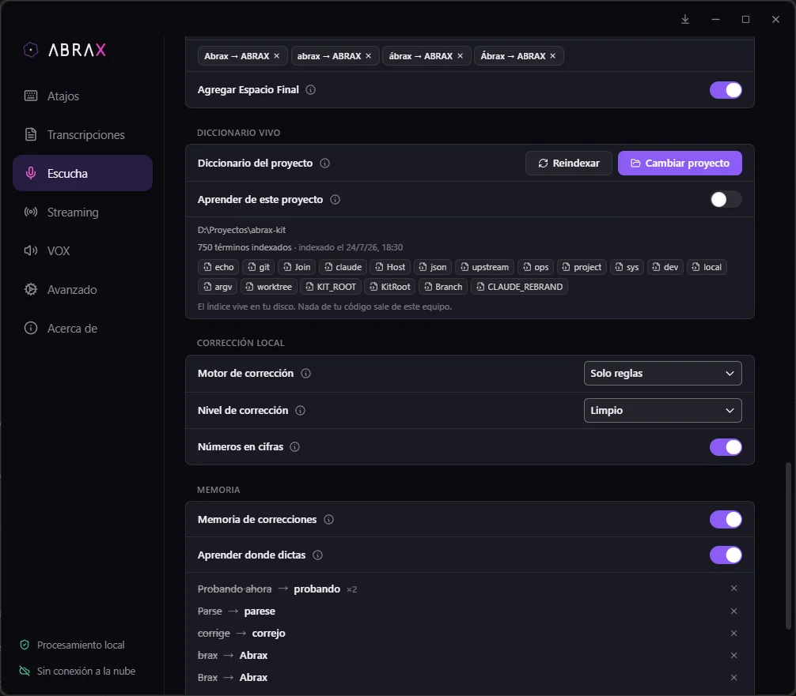
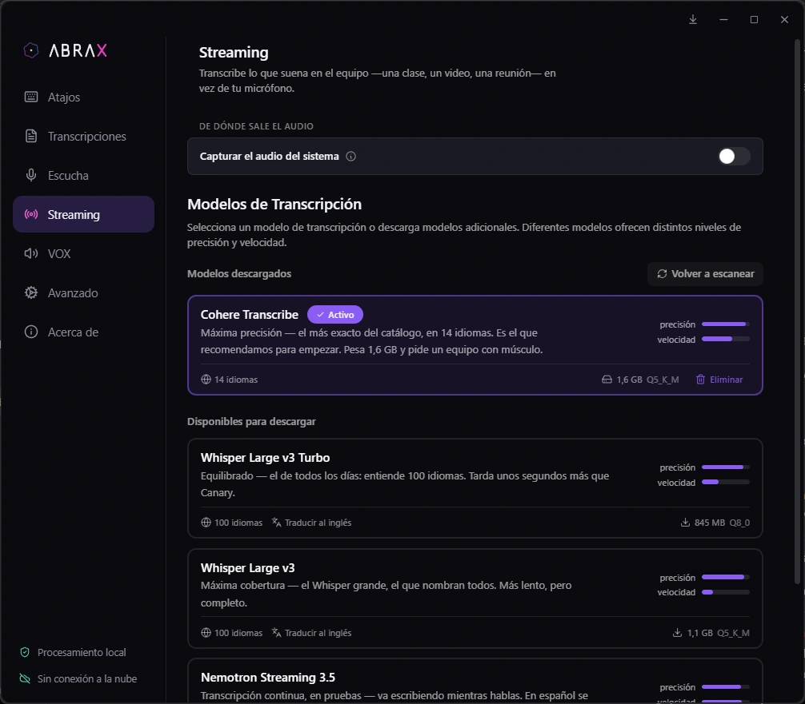
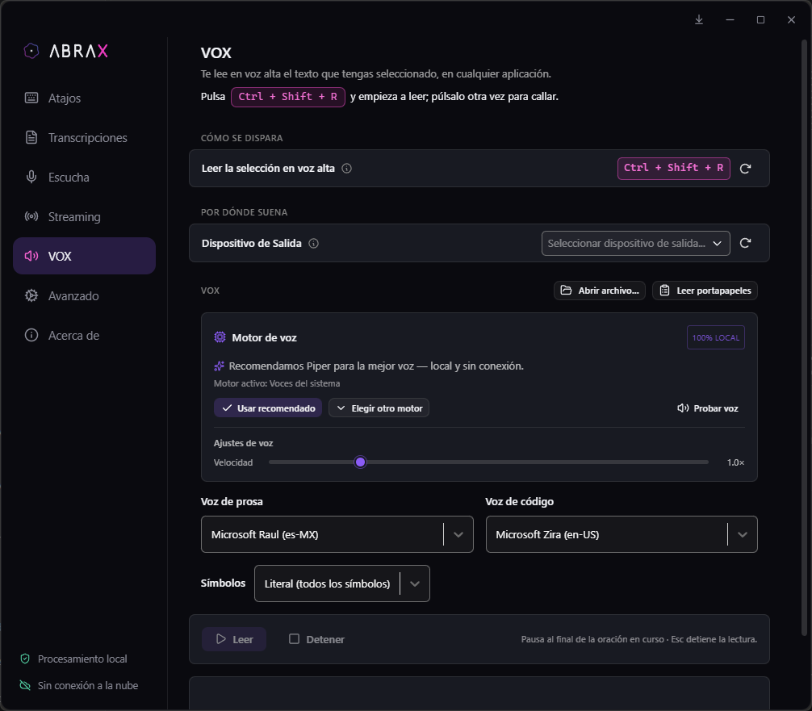
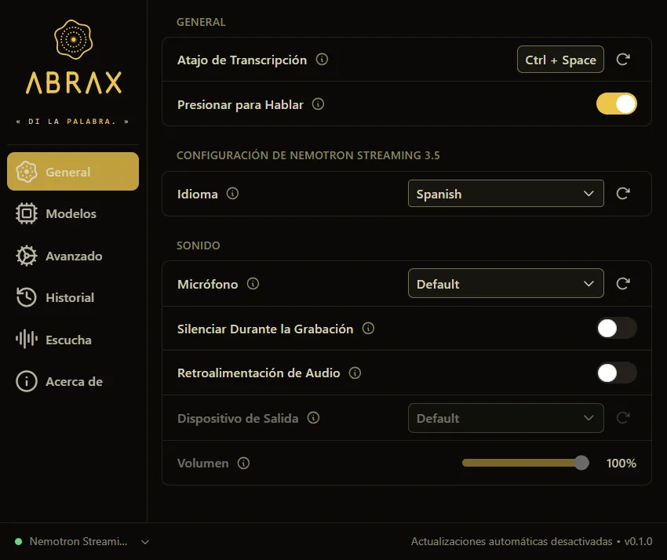
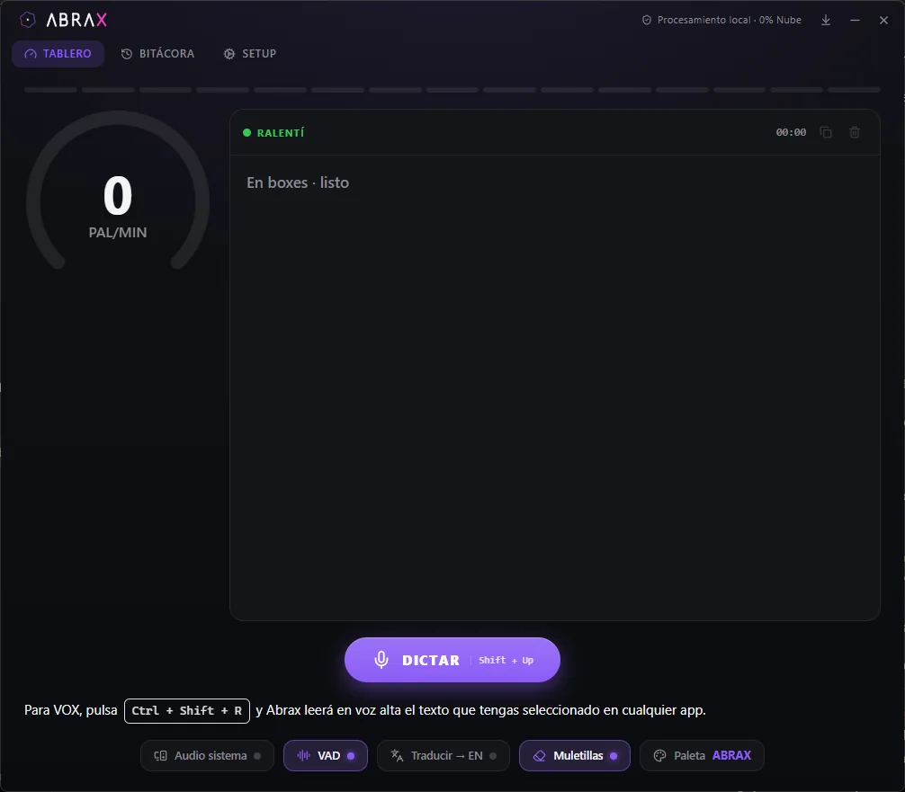
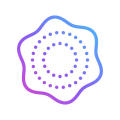

Puesto de voz local · para los que le hablan a la IA todo el día
« DI LA PALABRA. »
Presionas un atajo, hablas en tu español, y el texto —código o prosa— aparece en la app activa.
Local por defecto: el audio del micrófono nunca sale de tu equipo. Las funciones online son opt-in y vienen desactivadas.
Presiona. Habla. Aparece.
Cuatro pasos, sin ventanas de por medio.
Un atajo global, en cualquier app.
En tu español. Las muletillas se filtran solas.
En tu equipo. El audio no sale de ahí.
El texto aparece donde estaba el cursor.
Hecho para tu voz.
Lo que hace hoy. Ni más ni menos.
Indexa tu proyecto y corrige el dictado con tu propio vocabulario.

Una clase, un video, una reunión: cambias el micrófono por el audio del sistema y lo ves en texto. ABRAX salta solo a un modelo apto y, al apagarlo, restaura el que usabas. Local, igual que el dictado.

Selecciona texto en cualquier app y VOX te lo lee: una voz para prosa, otra para código, y los símbolos en modo natural o literal. Voces del sistema, Piper y Kokoro — locales. La captura es la app real.

es-419 de primera clase: entiende el español que hablas, no uno neutro de doblaje.

Clásico, Quiet, Karting y Retro.

ABRAX, IMPERIAL y ESCUDERÍA.
Te corriges al hablar y sale ya corregido. Viene encendida de fábrica.
1 531 nombres, por tabla. Solo actúa detrás de la palabra «emoji»: no convierte nada por accidente.
Números en cifras, símbolos, correos y ortotipografía — por reglas, sin IA y sin conexión. Se enciende en Ajustes; y si corriges un dictado en el historial, aprende.
Y además: overlay en 4 estilos, icono en la bandeja, historial con límite y retención configurables, y la interfaz en 22 idiomas.
Tu audio no sale de aquí.
Sin letra chica: esto es exactamente lo que pasa con tus datos.
Vienen desactivadas; se activan una por una.
Tus dictados, ajustes y diccionario viven en una carpeta local:
La borras y no queda nada tuyo. No hay cuenta que cerrar. Los modelos de voz se guardan aparte, en la caché de Hugging Face (~/.cache/huggingface), porque pesan y se comparten con otras herramientas: si quieres recuperar ese espacio, hay que borrarla también.
La esfera te escucha.
La esfera de arriba ya está viva: con tu micrófono respira contigo.
El permiso de micrófono se pide solo si presionas el botón, nunca al cargar la página. El audio se procesa en tu navegador y no se envía a ningún servidor.
Lo que funciona y lo que todavía no, con la misma letra.
macOS bloquea la app la primera vez, porque no está firmada: te explicamos abajo qué hacer. Pide conceder Accesibilidad y Micrófono. En Intel, los modelos grandes van lentos.
Windows muestra dos avisos antes de instalar, porque el instalador no está firmado: te explicamos abajo qué hacer.
El código compila en Linux, pero no lo hemos probado lo suficiente como para ofrecerlo. Preferimos no dar una descarga que no podemos sostener. Si compilas desde el código, funciona.
Cada opción tiene su lugar. Esta es la diferencia, sin caricaturas.
| ABRAX | Dictado del sistema | Dictado en la nube | |
|---|---|---|---|
| Precio | Gratis (MIT) | Incluido en el SO | Suscripción o pago por uso |
| El audio se procesa | En tu equipo | Según el SO, a veces en la nube | En servidores de terceros |
| Español es-419 | Primera clase — muletillas, voz de código | Variable | Generalmente bueno |
| Vocabulario de tu repo | Sí — Diccionario Vivo | No | No |
Honesto: con mucho ruido de fondo, un servicio en la nube grande todavía puede transcribir mejor que un modelo local chico.
Cinco en el catálogo, con sus números reales. Eliges uno, se descarga una vez, y transcribe sin conexión.
| Modelo | Tamaño | Idiomas | Precisión | Velocidad |
|---|---|---|---|---|
| Cohere Transcribe — el recomendado | 2.0B | 14 | 92 | 63 |
| Whisper Large v3 Turbo | 809M | 100 | 87 | 35 |
| Whisper Large v3 | 1.5B | 100 | 89 | 23 |
| Nemotron Streaming 3.5 | 0.6B | 28 | 82 | 84 |
| Canary 180M Flash | 180M | 4 | 88 | 98 |
Precisión y velocidad son los puntajes del catálogo, de 0 a 100. Los cinco entienden español. Solo Nemotron escribe mientras hablas (streaming); Whisper y Canary también traducen al inglés.
Las que nos harías antes de instalar.
Tu sistema va a advertirte. Es esperable y te contamos exactamente qué vas a ver.
ABRAX no está firmado con un certificado comercial. Firmarlo cuesta cientos de dólares al año y no haría el programa más seguro: solo haría que Microsoft y Apple nos reconocieran. Como no lo está, tu sistema avisa de que no sabe quién lo publica — que es cierto, y por eso el código está entero a la vista.
Primero una pantalla azul de SmartScreen diciendo que protegió tu equipo. Después, una ventana de permisos donde el editor aparece como desconocido y se ve la ruta completa del archivo.
SmartScreen no dice que el archivo sea peligroso: dice que es nuevo y que poca gente lo ha descargado todavía.
La primera vez, macOS bloquea la app y te ofrece moverla a la papelera. Ese aviso no trae ningún botón para abrir — el permiso se da en otro sitio.
El clic derecho → Abrir ya no sirve: Apple lo quitó en macOS 15. Y ese botón caduca en cosa de una hora — si tardas, vuelve a abrir la app y repite.
Si macOS dice que ABRAX está dañado, no lo está: es la marca de cuarentena que pone el navegador al descargar. Se quita con una línea en la Terminal.
En Windows, si el instalador no arranca, abre las Propiedades del archivo y marca Desbloquear abajo del todo.

Gratis. Open source. Local. Para siempre.
Todavía no hay descarga publicada. El instalador se libera el viernes 31; hasta entonces, el código está entero y se puede compilar.
No hace falta que nos creas: el código está entero y puedes compilar tu propia copia. Los binarios no van firmados — por eso tu sistema avisa — así que la garantía que ofrecemos es esa, poder mirar.